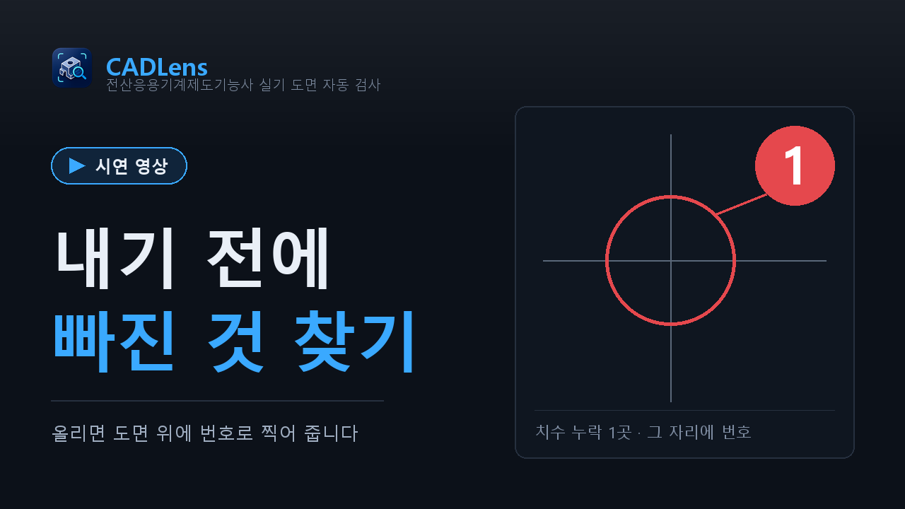
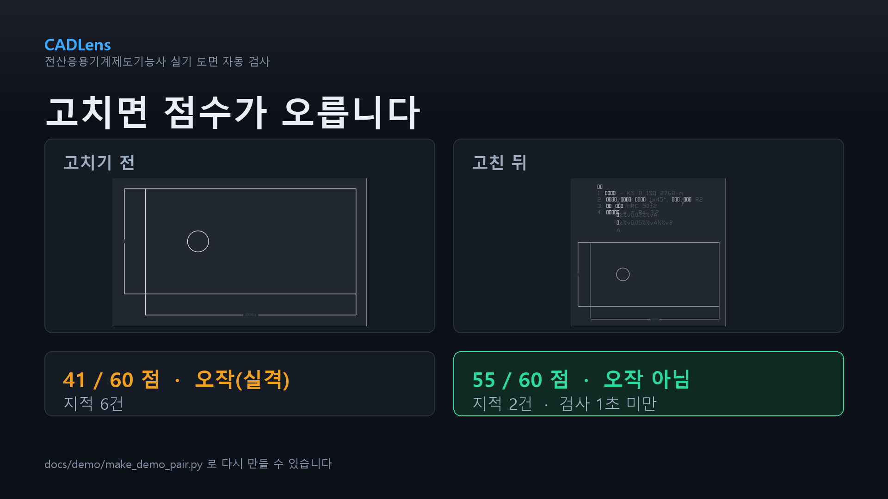
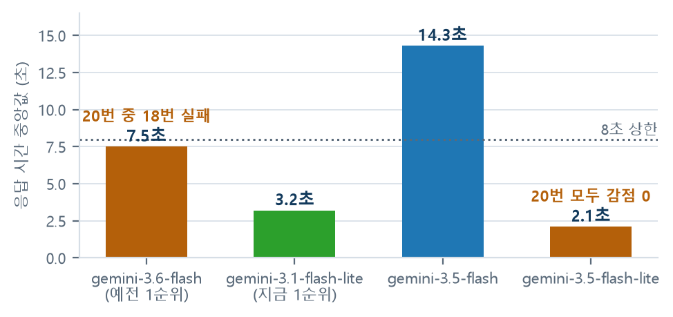

전산응용기계제도기능사 실기 도면을
제출 전에 스스로 점검하는 웹 검사기 — 프로젝트 소개서 —

그림 0. 도면을 올리면 지적 자리에 번호를 찍어 돌려주는 결과 화면.
37
검사 항목
100%
실제 도면 23장 검출률 · 헛지적 0건
10초
검사 한 번 목표 시간
24건
기록한 문제 (해결 17 · 열림 5)
팀
네이놈 · 박지완 · 장우영 · 안대열 · 김승준
소속
구미전자공업고등학교
서비스
https://naverogq.onrender.com · 한국어 / English / 日本語 / 中文
저장소
MIT 라이선스 · 코드와 문서 전부 공개
기준일
2026-09-25 (본선 8주 코칭 W6)
CADLens 프로젝트 소개서1 / 20
목차무엇이 어디에 있나
이 문서는 CADLens가 무엇을 풀려고 하는지, 어떻게 만들었는지,
얼마나 맞는지 직접 재어 본 결과, 그리고 아직 안 되는 것을 순서대로 적은 소개서입니다.
잘 되는 것보다 안 되는 것을 더 자세히 적었습니다. 공부용 도구가 틀린 것을 자신 있게 말하면
쓰는 사람이 틀린 것을 배우기 때문입니다.
Ⅰ. 왜 만들었나
1요약 — 한 장으로 보는 CADLens3
2문제 정의 — 5시간 안에 그리고 그 자리에서 낸다4
3사용자 조사 — 다섯 사람에게 직접 물었다5
Ⅱ. 무엇을 어떻게 만들었나
4해결 방식 — 대신 그리지 않고, 빠진 것만 찾는다6
5시스템 구조 — 파일 하나가 결과가 되기까지7
6도면 읽기 — DWG·DXF에서 무엇을 뽑는가8
7채점 설계 — 70점은 규칙, 30점은 AI9
8검사 항목 37개와 실격 조건 6가지10
9AI 채점 — 채점기 넷을 줄 세운 이유11
10수정 예시 — 고칠 자리를 도면 위에 그린다12
Ⅲ. 얼마나 맞는가
11정확도 측정 — 표본 세 종류와 그 한계13
12측정으로 잡은 문제 24건14
Ⅳ. 쓰이고 있는가
13지표 설계 — 북극성 지표와 퍼널15
14리텐션과 개선 한 건16
Ⅴ. 책임과 앞으로
15개인정보 · 미성년자 안전 · AI 윤리17
16기술 스택과 라이선스18
17임팩트와 사업화 가능성19
18한계와 발전 계획 · 부록20
이 문서에 적힌 숫자에 대하여. 표와 그래프의 값은 전부 저장소 안의 측정 기록과
운영 중인 서버의 /api/stats 응답에서 가져왔습니다. 추정하거나 반올림해서
좋게 보이게 만든 숫자는 없습니다. 아직 재지 못한 것은 "아직 못 잼"이라고 적었고,
표본이 작을 때는 비율 옆에 실제 인원을 같이 적었습니다(35%(11/31)).
전산응용기계제도기능사 실기는 5시간 안에 도면을 다 그려서 그 자리에서 제출합니다.
내고 나면 고칠 수 없습니다. 그런데 떨어지는 이유는 대부분 "그릴 줄 몰라서"가 아니라
표면거칠기 값을 안 적었거나, 기하공차에 데이텀을 빼먹었거나, 구멍에 지름 치수를 안 넣은 경우입니다.
CADLens는 도면 파일을 올리면 이런 것들을 도면 위에 번호로 찍어 돌려줍니다.
무엇을 만들었나
DWG 또는 DXF 도면을 웹에 올리면 37개 항목을 자동으로 확인하고, 문제가 있는 위치를
도면 그림 위에 번호로 표시합니다. 지적할 때마다 왜 틀렸는지와 어떻게 고치는지를
같이 알려 줍니다. 회원가입도 설치도 없고, 무료입니다.
점수는 공개된 채점 기준표의 8개 항목을 그대로 따라 100점으로 매깁니다.
이 중 70점은 규칙 코드가, 배점이 가장 큰 투상도 30점은 AI가 채점합니다.
실격(오작) 조건 6가지는 점수와 상관없이 따로 먼저 확인합니다.
왜 나누었나
"표면거칠기 값이 비어 있다" 같은 것은 답이 정해져 있어서 규칙이 더 빠르고 늘 같은 답을 냅니다.
문제는 나머지입니다. "정면도를 잘 골랐나", "뷰가 균형 있게 놓였나"는 정답을 조건식으로
적을 수가 없습니다. 도면을 눈으로 보고 판단해야 하는 영역인데, 실기에서 배점이 가장 큰
항목(30점)이 하필 여기입니다. 그래서 도면을 그림으로 만들어 멀티모달 AI에게
채점위원 기준으로 보여 주는 방식을 썼습니다.
얼마나 맞나
답을 미리 정해 둔 도면으로 잽니다. 우리가 만든 기준 도면 25장, 합성 도면 100장,
그리고 기계과 학생에게 받은 실제 도면 23장에서 모두 완전 일치했고 헛지적은 0건이었습니다.
다만 이 100%는 표본이 한 학생 것이고 37개 검사 중 6개만 라벨한 결과입니다.
그 한계를 13쪽에 그대로 적었습니다.
쓰이고 있나
2026-08-30부터 서버가 직접 셉니다. 최근 정상 주(09-14~20) 기준 방문 31명 중
11명이 검사를 시작했고, 그중 10명이 그 주에 고쳐서 다시 올렸습니다.
퍼널에서 방문 → 검사 시작 한 칸에서만 65%가 빠집니다. 그 뒤 칸은 새지 않습니다.
정직하게 만드는 것
안 되는 것을 문서로 공개하는 데 더 신경 썼습니다. 확실하지 않으면 감점하지 않고
"사람 확인 필요"로 남기고, AI가 전부 막히면 30점을 비워 둔 채 아는 척하지 않습니다.
일하다 만난 문제 24건을 고쳤든 못 고쳤든 저장소에 남겼습니다.
그림 1. 100점 배점 구성. 규칙 코드 70점과 AI 30점으로 나뉜다.
나눈 기준은 "조건식으로 정답을 적을 수 있는가"다.그림 2. 사용 퍼널(2026-09-14 주, 사람 수). 올리기만 하면 결과까지
100% 도달하고 91%가 다시 올린다. 새는 칸은 첫 화면 하나다.
여기까지 온 순서
언제
무엇이 있었나
2026-08 초
합성 기준 도면 18장으로 첫 정확도 측정. 검사 항목 31개
08-22
단위가 mm가 아닌 도면이 백지로 렌더되던 것을 발견 — AI가 백지를 채점하고 있었다
08-26~28
대면 인터뷰 5건. "4시간"이 5시간이었다는 것을 포함해 전제를 고침
09-06
실제 도면에서 오작이 전부 뜸. 학생 도면 32장 변환은 0/32로 실패
09-11
Inventor 2027 설치 후 30/32 변환 성공 → 실제 도면 23장으로 재측정.
AI가 도면의 29~51%만 보고 있었던 것과 윤곽선을 한 장도 못 찾던 것을 같이 발견
09-16
공개 서버 런칭. 그 주부터 방문·검사·재검사를 서버가 직접 셈
09-18
채점 모델을 실측으로 교체 (gemini-3.6-flash는 20번 중 18번 실패)
09-23~25
퍼널 작성 · 사람이 아닌 접속 거르기 · 코호트 계측 · 개선 1건 적용
Ⅰ. 왜 만들었나 · 1. 요약3 / 20
2문제 정의 — 5시간 안에 그리고 그 자리에서 낸다
구미전자공업고등학교에서 기계제도를 배우는 학생입니다. 도면을 그릴 때는 다 완성했다고
생각했는데, 나중에 확인해 보면 치수가 하나 빠져 있거나 공차와 표면거칠기 기호를 빼먹는 일이
자주 있었습니다. 작은 기호 하나 때문에 점수가 깎이거나 실격될 수도 있지만, 복잡한 도면에서
직접 찾는 것은 생각보다 어려웠습니다.— 만든 사람의 기록 (docs/왜_만들었나.md)
혼자서는 잘 안 보이는 이유 세 가지
확인할 게 너무 많습니다. 채점 항목이 8가지로 나뉘고, 그 안에서 봐야 할 세부 항목은
20개가 넘습니다. 5시간 동안 그리면서 이걸 전부 머릿속에 두기 어렵습니다.
틀렸다고 말해 주는 사람이 없습니다. 혼자 연습하면 뭘 빠뜨렸는지 알 방법이 없습니다.
시험 결과도 합격인지 아닌지만 나오고, 무엇 때문에 떨어졌는지는 알려 주지 않습니다.
틀린 걸 모르고 하는 연습은 실수를 굳힙니다. 틀린 채로 100장을 그리면
101장째도 똑같이 틀립니다. 반복이 실력이 아니라 습관이 됩니다.
이 문제를 겪는 사람은 몇 명인가
그림 3. 전산응용기계제도기능사 실기 응시자와 합격률(2021~2025).
회색 막대가 전체 응시자, 주황 막대가 불합격 인원, 선이 합격률이다.
출처 — 한국산업인력공단 Q-Net 종목별 검정현황(2026년 8월 기준 공개 표에서 옮겨 적음).
직접 계산한 값이 아니라 원래 출처와 다를 수 있습니다.
매년 1만 명 정도가 필기를 보고 3천 명 넘게 실기를 봅니다. 실기 합격률이
5년째 45~53%에 머물러 있어서, 최근 3년만 봐도 매년 1,500~1,700명이 실기에서 떨어집니다
(2021년까지 넣으면 연평균 약 1,900명).
필기 1만 명 중 실기를 보는 사람이 3천 명뿐인 것도 눈여겨볼 대목입니다. 준비하다
포기하는 사람이 그만큼 많다는 뜻으로 봅니다. 그리고 떨어지는 사람 중 상당수는
그리는 실력이 아니라 표기를 빠뜨려서 떨어집니다.
여기에 더해, 실습 시간에는 선생님 한 명이 학생 30명의 도면을 전부 봅니다.
대부분은 매번 똑같은 확인입니다. "거칠기 값이 비었다", "데이텀이 없다" 같은 것을
사람이 반복해서 짚고 있습니다.
그래서 문제를 이렇게 한 문장으로 적었습니다.
우리는 전산응용기계제도기능사 실기를 혼자 준비하는 수험생이 도면을 제출하기 직전에 겪는,
혼자 볼 때는 무엇을 빠뜨렸는지 짚어 줄 사람이 없고 남이 짚어 줘도 그때는 고칠 시간이 없는 문제를,
도면 파일을 올리면 빠진 항목을 도면 위에 찍어 주는 웹 검사기로 없앤다.
— 문제 정의 한 문장 (2026-08-30 인터뷰 5건으로 고침)
우리가 생각한 문제와 실제로 겪는 문제가 다르면 다른 쪽이 맞습니다.
만들기 전에 다섯 명을 따로 만나 물었습니다. 구미전자공고 자동화관에서 한 명당 약 30분씩,
같은 질문지 다섯 개를 그대로 썼습니다. 질문 1에서 나온 가장 최근 실수 하나를
질문 2~4까지 끝까지 따라갔습니다. 직접 인용 3개는 들은 말 그대로 적고
(다듬으면 그 사람 말이 아니라 우리 말이 됩니다), 끝나고 5분 안에 채웠습니다
(미루면 인용이 요약으로 변합니다). 이름은 박*후처럼 가려 씁니다.
"축에서 베어링 닿는 자리 있잖아요. 거기 표면거칠기 기호 하나를 빼먹었어요.
저는 형상이랑 치수 맞추는 데만 눈이 가서 표면거칠기는 마지막에 몰아서 넣거든요.
그러니까 하나가 빠져도 화면이 비어 보이지 않아서 잘 모르겠더라고요. (…)
캐드 파일 열어서 그 면에 기호 넣는 건 한 2분밖에 안 걸렸어요. 근데 PDF 다시 만들고,
파일 이름 확인하고, 프린터 자리 기다렸다가 종이 방향까지 보고 뽑으니까 총 11분 정도 썼어요.
그거 고치고 나니까 남은 6분 동안에는 다른 걸 거의 못 봤어요."
— 인터뷰 1 · 메카트로닉스과 2학년 (2026-08-26)
다섯 사람의 "가장 최근 실수" — 무엇을, 언제 알았고, 고치는 데 얼마나 걸렸나
누가
무엇을 빠뜨렸나
언제 알았나
고치는 데 든 시간
박*후 · 2학년
베어링 접촉부 표면거칠기 기호 1개
출력 뒤 친구의 교차 확인 · 종료 17분 전
기호 넣기 2분, 재출력까지 총 11분
박*호 · 2학년
커버 뷰가 자동으로 2:1 척도가 된 것
출력 직전 속성값 점검
6분 40초 수정, 총 11분 뒤 출력
배*후 · 2학년 · 독학
데이텀과 기하공차를 통째로 비움
이틀 뒤 첨삭에서 (모의 배점 8점 전체)
복습에 1시간 25분
최*영 · 2학년
프린터의 이전 A4 설정 → 축소·잘림
종이로 확인 · 종료 21분 전
설정 수정 · 재출력 · 검토 11분
손선생님 · 기계제도 담당
내부 턱을 보여 줄 단면도 누락
작업 3시간 32분에
단면 작성과 치수 재배치 24분
여기서 무엇이 바뀌었나
1. 고치는 시간이 문제가 아니었습니다. 기호를 넣는 데는 2분입니다. 문제는
찾는 데까지 걸린 시간과, 찾고 나서 다시 제출물을 만드는 시간이었습니다.
그래서 CADLens는 "대신 그려 주는 것"이 아니라 "빨리 찾아 주는 것"에 집중했습니다.
2. 사람이 먼저 보면 이미 늦습니다. 발견 시점이 종료 17분 전, 21분 전,
심지어 이틀 뒤였습니다. 남이 봐 주는 방식은 봐 주는 시점이 항상 늦다는
구조적 한계가 있습니다. 파일만 있으면 몇 초 만에 도는 검사가 필요한 이유입니다.
3. 빠진 것은 "비어 보이지 않습니다". 기호 하나가 없다고 화면이 허전해지지 않습니다.
사람 눈이 놓치도록 생긴 문제이고, 그래서 기계가 세는 것이 실제로 이깁니다.
4. 다섯 명 모두 이미 자기만의 체크리스트를 만들어 쓰고 있었습니다.
A4 종이 체크리스트, 부품별 체크칸, 출력 점검 8개 항목, 형광펜으로 접촉면 표시.
필요를 증명할 필요가 없었습니다 — 이미 손으로 하고 있었습니다.
강한 신호 — 이미 돈과 시간을 쓰고 있었다
"나오면 써 볼게요"는 신호가 아닙니다. 이미 쓴 돈만 셉니다.
실기 교재 32,000원, 중고 교재 18,000원, 온라인 실기 강의 한 달 40,000원,
집에 A3 프린터가 없어 복사집에서 2주 동안 14번 출력 약 18,200원,
야간 학원 6주 과정 420,000원. 시간도 주 2회 × 2시간 × 6주,
넉 달, 완성 13세트 같은 단위로 나왔습니다.
조사가 실제로 고친 것
W1에 적어 둔 "4시간짜리 실기 도면"이 틀렸습니다. 다섯 명 모두 5시간이라고
말했고 한 명은 "5시간 중 4시간 43분"으로 분 단위로 말했습니다. Q-Net 종목 정보도 5시간이었습니다.
2026-08-29에 고쳤습니다. 물어보지 않았으면 틀린 전제 위에 8주를 쌓을 뻔했습니다.
다섯 사람의 실수를 우리 검사 항목에 하나씩 대보는 표도 만들었습니다
(EX_SURFACE_FEW 처럼 어느 검사가 잡는지). 문제 정의 한 문장도 이 다섯 건으로
고쳤습니다(2026-08-30).
근거 — docs/interviews.md(대면 5건 전문 · 폼 응답 · 겹치는 항목 표) ·
plan/w2/08-25_화/질문지.md · 외부 자문으로 구미전자공고 김민정 선생님께
수업에서 무엇을 확인하시는지 여쭤 검사 항목에 반영했습니다.
도와주신 분들이 이 프로젝트 결과에 책임을 지시는 것은 아닙니다.
Ⅰ. 왜 만들었나 · 3. 사용자 조사5 / 20
4해결 방식 — 대신 그리지 않고, 빠진 것만 찾는다
CADLens는 도면을 대신 그려 주지 않습니다. 내기 직전에 빠진 것을 찾아 주고,
왜 틀렸는지 알려 주는 것만 합니다. 혼자 연습하는 사람도 선생님 없이
검사 → 고치기 → 다시 검사를 반복할 수 있게 하는 것이 목표입니다.
① 올린다DWG · DXF · zip 끌어다 놓기
▶
② 읽는다치수 · 기호 · 공차 표제란 · 뷰 좌표
▶
③ 채점한다규칙 70점 AI 30점
▶
④ 그린다지적 자리에 번호를 찍는다
▶
⑤ 고친다다시 올리면 전후를 비교
그림 4. 결과 화면. 왼쪽에 도면과 번호, 오른쪽에 지적 목록과 점수.

그림 5. 다시 검사하면 고쳐짐 / 그대로 / 새로 생김과
점수 변화를 같이 보여 준다.
지적 하나가 끝이 아니다
감점 문구만 보고 "이게 왜 감점이지" 하고 막히면 고칠 수가 없습니다. 그래서 AI가 매긴
지적마다 왜 감점이야? · 어디를 눌러? · 고친 뒤 확인은?
세 개의 답을 채점 직후 이어서 만들어 둡니다. 버튼을 누르면 바로 펼쳐지고 서버를 다시 부르지 않습니다.
검사 한 번을 10초 안에
도면을 읽고 미리보기를 그리는 동안 AI 채점을 같이 돌리고, AI는 8초까지만 기다립니다.
그 안에 안 오면 나머지 결과를 먼저 보여 주고 투상도 항목만 AI 채점 중으로 둔 뒤,
채점이 도착하면 그 자리에서 채웁니다. 응답에 Server-Timing 헤더로
도면 읽기 · 미리보기 · AI 대기 시간이 각각 들어 있어 어디서 시간이 갔는지 바로 볼 수 있습니다.
네 나라 말로 보여 준다
지적과 총평을 한국어 · English · 日本語 · 中文으로 보여 줍니다. 도면마다 문장이 달라
고정 번역표를 쓸 수 없어서, 채점 결과를 한 번 더 넘겨 세 언어를 받아 같은 캐시에 넣습니다.
자유 입력란을 두지 않았다
주 사용자가 미성년자라 AI를 도면 채점 역할에 묶어 두는 편이 안전하고,
정해진 질문만 쓰면 답을 미리 만들어 캐시에 넣을 수 있어 무료 할당량도 아낍니다.
채팅 · 댓글 · 프로필처럼 사용자끼리 만날 수 있는 기능이 아예 없습니다.
웹 화면에 프레임워크를 쓰지 않았다
React 같은 것을 쓰지 않았습니다. 따로 빌드하는 과정 없이 파일 하나만 열면 되게
하고 싶었습니다. 화면은 HTML + CSS + JS 그대로이고, 글꼴도 외부에서 불러오지 않고
서버에 직접 올려 둡니다.
안 하기로 한 것 — 그리고 왜
안 하는 것
왜
도면을 대신 그려 주지 않습니다
대신 그려 주면 그것은 더 이상 학생의 도면이 아닙니다. 연습 도구가 연습을 대신하면 남는 것이 없습니다
표면거칠기 · 기하공차 · 끼워맞춤 값은 그려 주지 않습니다
어느 면과 어느 치수에 넣을지가 설계 판단입니다. 빠졌다는 사실과 왜 필요한지만 알려 주고 값은 스스로 정하게 둡니다
AI와 자유롭게 대화하는 입력칸을 두지 않습니다
주 사용자가 미성년자입니다. 역할을 채점으로 고정해 두는 편이 안전하고, 정해진 질문만 쓰면 답을 미리 만들어 둘 수 있어 무료 할당량도 아낍니다
확실하지 않으면 감점하지 않습니다
공부용 도구가 틀린 것을 자신 있게 말하면 학생은 틀린 것을 배웁니다. "알 수 없음"을 "없음"으로 바꾸지 않습니다
회원가입 · 광고 · 결제를 붙이지 않았습니다
쓰는 데 계정이 필요하면 혼자 준비하는 사람부터 떨어져 나갑니다
Ⅱ. 무엇을 어떻게 만들었나 · 4. 해결 방식6 / 20
5시스템 구조 — 파일 하나가 결과가 되기까지
서버 한 대로 돌아갑니다. 도면 파일이 들어와서 결과 화면이 나가기까지
다섯 단계를 거치고, 그중 네 번째(채점)만 규칙과 AI로 갈라집니다.
같은 도면을 다시 검사하면 저장해 둔 AI 응답을 써서 API를 다시 부르지 않습니다.
단계
하는 일
무엇이 일어나는가
1
올린다
웹 화면에서 파일을 끌어다 놓으면 서버로 보냅니다. zip으로 올리면 압축을 풀고 안에서 도면을 찾습니다. 최대 200MB.
2
DWG면 DXF로
dwg2dxf(LibreDWG)를 먼저 쓰고, 없으면 CloudConvert, 그다음 ODA File Converter 순으로 넘어갑니다.
셋 다 없으면 "DXF로 내보내서 올려 달라"고 안내합니다. 공개 서버는 서버 안에 설치된 LibreDWG만 씁니다 — 변환하려고 도면을 밖으로 보내지 않습니다.
100점 중 70점은 규칙으로, 30점은 AI로 채점합니다. 실격 조건 6가지는 점수와 상관없이 따로 먼저 확인합니다.
5
그림과 함께 돌려준다
도면을 그려서 문제 자리에 번호를 찍고, 지적 목록과 점수를 같이 보냅니다.
파일이 각각 맡은 일
파일
하는 일
main.py
서버. 파일을 받고 결과를 돌려줌
check.py
읽기 → AI 채점 → 규칙 채점 순서를 이어줌
dwg.py
도면 읽기. DWG 변환, 정보 뽑기, 그림 그리기
exam.py
채점. 검사 규칙 37개와 배점표
ai_review.py
AI에게 투상도 배열을 물어보는 부분
stats.py
방문 · 검사 · 재검사를 세는 자리
variance.py
같은 도면을 여러 번 채점해 AI 점수 흔들림 측정
bench.py test_rules.py
검사가 제대로 되는지 확인
(자동 테스트 · 기준 도면 25장 · 합성 도면 100장)
static/*.html *.js · site.css
웹 화면 3장
(첫 화면 · KS 기준 · 정확도)과 공통 스타일
어디서 도는가
무엇
어떻게
서버 실행
Docker 이미지 → Render.com
통계 저장
Cloudflare D1 (hits 표).
연결이 없으면 서버 안 SQLite로 떨어지는데, 그때는 서버가 다시 뜰 때 0부터 셉니다
올린 도면
그 검사에만 쓰고 최대 1시간 뒤 삭제
AI 응답
도면 내용으로 키를 만들어 캐시. 같은 도면이면 재호출 0
시간이 어디로 갔는지 볼 수 있다
응답에 Server-Timing 헤더가 붙습니다. 도면 읽기 · 미리보기 그리기 ·
AI 대기 시간이 각각 들어 있어서, 느릴 때 어디가 느린지 추측하지 않고 바로 봅니다.
이 헤더 덕분에 "AI 채점 호출보다 답변·번역 생성이 두 배 넘게 걸린다(실측 13초 대 5초)"는
것을 알아내고, 점수와 지적을 먼저 보여 주고 답과 번역은 몇 초 뒤 채우는 방식으로 바꿨습니다.
속도 제한을 붙인 곳
도면 한 장이 CPU 몇 초와 AI 호출 하나를 씁니다. 자동으로 반복되면 무료 서버와
AI 할당량이 같이 마릅니다. 그래서 검사 · 신고 · 계측 이벤트 세 곳에
접속자별과 서버 전체를 같이 세는 상한을 걸었습니다. 한 학교에서 한 IP로 같이
들어오는 경우를 생각해 사람 쪽 상한은 넉넉히 뒀습니다.
채점은 전부 도면 파일에서 실제로 읽어 낸 값 위에서 이뤄집니다.
그래서 "읽기"가 틀리면 그 뒤가 전부 틀립니다. 실제로 이 프로젝트에서 가장 크게 틀렸던 것도
채점 규칙이 아니라 읽기였습니다.
무엇을 뽑는가
치수 엔티티와 그 값, 지름 기호가 붙은 치수, 원과 호의 중심 좌표와 반지름, 표면거칠기 기호와
그 옆 문자, 기하공차 기입틀과 데이텀 문자, 끼워맞춤 기호(H7·h6·js5),
주서 문자열, 표제란 칸의 척도·각법·재료·작성자, 부품란, 도면 윤곽선의 네 변, 뷰의 경계 상자와
그 중심 좌표, 레이어와 선종류 이름, 선 굵기, 문자 높이.
못 읽는 것은 못 읽는다고 한다
Inventor 원본(ipt·idw·iam)은 공개된 형식이 아니라
서버에서 못 읽습니다. 올리면 무슨 파일인지 알아보고 파일 > 내보내기 > DWG/DXF
절차를 알려 줍니다. "알 수 없음"을 "없음"으로 바꾸지 않는 것이 이 프로젝트의 규칙입니다.
순수 DXF는 뷰 경계를 알 수 없어서 투상도 개수·배치를 못 셀 때가 있습니다.
이럴 때 "없다"고 하지 않고 검사를 건너뜁니다. 감점하지 않고 "사람 확인 필요"로 남깁니다.
실제 도면으로 바꿔 본 결과
기계과 학생에게 받은 Inventor 도면 32장을 idw2dxf.py로 변환했습니다.
2026-09-06에는 0/32로 전부 실패했는데, Inventor 2027을 설치한 뒤 30/32로 돌아갔습니다
(2026-09-11). 중복 저장본을 빼면 서로 다른 23장입니다.
읽기에서 크게 틀렸던 세 가지
1. 윤곽선을 한 장도 못 찾고 있었습니다. 실기 도면의 윤곽선은 닫힌 사각형이 아니라
선 네 개입니다. 닫힌 도형만 찾고 있었으니 모든 도면에 "표제란·도면양식 없음"이 떴고,
도면 크기를 아예 재지 않아 A2 요구 판정이 통째로 빠져 있었습니다. 고친 뒤
실제 도면 30장 중 28장에서 윤곽선을 찾았고, 그 덕에 A2/A3/A1/A0 판정이 살아났습니다.
2. 방향 표시 글자를 거칠기 기호로 착각했습니다.X·Y·Z를
표면거칠기로 세는 바람에 기호가 하나도 없는 도면을 통과시켰습니다. 잘못 지적하는 것보다
실격을 놓치는 쪽이 더 위험해서 먼저 고쳤습니다.
3. 뷰 이름표를 주서로 셌습니다. Inventor가 붙이는 A-A ( 1 : 1 ) / . 같은
문자열을 주서로 세는 바람에, 주서가 없는 도면 8장에서 "주서 없음"을 놓쳤습니다.
읽는 방식
지금 방식
그래서 못 잡는 것
표면거칠기
기호 문자로 찾음
선으로만 그리고 문자를 안 넣으면 못 봄
기하공차
TOLERANCE 엔티티와 문자
기입틀을 선과 문자로 직접 그리면 못 봄
중심선
레이어·선종류 이름으로 찾음
이름이 CENTER 계열이 아니면 못 셈
요목표
읽지 않음
스퍼기어 요목표의 다듬질 방법 칸을 주서로 셌던 적 있음
선 굵기
DXF의 선 굵기 값
출력 펜 설정(색)으로 굵기를 주는 도면은 판정 불가
위 표의 "못 잡는 것"은 숨기지 않고 정확도 문서와 웹 화면의 정확도 페이지(/accuracy)에
같이 공개합니다. 실제 도면 23장에서는 학생이 √ 를 선으로 그리면서 다듬질 문자(w·x·y·z)를
항상 같이 적었기 때문에 1·2번으로 놓친 경우가 없었습니다. 문자를 안 적는 도면이 오면 그때 필요합니다.
그림 6. 공개된 채점 기준표의 8개 항목을 그대로 쓴 100점 배점.
도면 배치와 외관 10점은 오래 빠져 있어서 만점이 90점이었고,
선 굵기·문자 크기처럼 DXF에서 바로 읽히는 항목이 채점되지 않고 있었습니다.
나눈 기준은 "조건식으로 적을 수 있는가"
"표면거칠기 값이 비어 있다", "데이텀 문자가 없다" 같은 것은 답이 정해져 있습니다.
규칙 코드가 더 빠르고, 몇 번을 돌려도 같은 답을 냅니다. 이런 것에 AI를 쓰면
느려지고 비싸지고 답이 흔들립니다.
문제는 나머지입니다. "정면도를 잘 골랐나", "뷰가 균형 있게 놓였나"는 정답을
조건식으로 적을 수가 없습니다. 도면을 눈으로 보고 판단해야 하는 영역이고,
실기에서 배점이 가장 큰 항목(30점)이 하필 여기입니다.
규칙 코드로는 이 30점을 아예 채점할 수 없어서, 도면을 그림으로 만들어
멀티모달 AI에게 채점위원 기준으로 보여 주는 방식을 썼습니다.
AI에게 맡기되, 맡길 수 있는 것만
투상도 항목 안에서도 좌표로 계산할 수 있는 것은 규칙으로 다시 잡습니다.
제3각법 배치(정면도 기준으로 평면도가 위·우측면도가 오른쪽인지)는 뷰 좌표로 직접 판정하고,
투상도 개수 부족, 중심선·중심마크 없음, 상세도·단면도 문자 표기 없음, 척도 표기 없음도
규칙으로 잡습니다. AI와 규칙이 같은 것을 두 번 보는 셈이지만, AI가 막혀도
이쪽은 살아 있습니다.
일부러 AI에게 맡긴 것
각 부품의 균형 배치(5점)는 AI에게 맡깁니다. 치우침을 수치로 재 봤더니
표제란이 오른쪽 아래를 차지해서 멀쩡한 도면이 전부 왼쪽으로 치우쳐 나왔습니다.
규칙으로 재면 전부 감점이 되는 항목이라 규칙을 뺐습니다.
AI가 전부 막히면
채점기 네 경로가 다 막히면 투상도 30점이 "사람 확인 필요"로 비워지고,
화면에도 AI가 꺼져 있다고 표시됩니다. 규칙 70점과 실격 확인은 그대로 돌아가지만
배점이 가장 큰 항목이 빠진 상태이므로, 없는 점수를 있는 것처럼 채우지 않습니다.
또 AI가 매기는 감점은 코드에서 30점을 넘을 수 없게 막아 뒀습니다.
실격(오작) 조건 6가지 — 점수와 따로, 먼저 본다
#
조건
비고
1
표면거칠기 기호가 아예 없음
공개된 수험자 유의사항의 오작 9가지 중 DXF로 판정할 수 있는 것들만 골랐습니다.
판정할 수 없는 항목을 억지로 넣지 않았습니다.
2
기하공차 기호가 아예 없음
3
끼워맞춤 공차 기호가 아예 없음
4
투상법이 제3각법이 아님
뷰 좌표로 직접 판정
5
도면 크기가 요구와 다름
요구 도면 영역은 공개문제 기준 A2.
A3는 출력 크기라 오작이 아니라 경고로 둡니다
6
표준에 없는 척도
표제란 척도 표기를 읽어 판정
실제 판정은 그 회차의 공개문제와 감독위원 지시사항을 우선합니다.
CADLens는 마지막에 확인하는 것을 도와주는 보조 도구이고, 공식 채점이 아니며
한국산업인력공단·Q-Net과 아무 관계가 없습니다. 검사 기준은 KS 규격과 공개된 채점 기준만 보고
만들었고, 비공개 채점표를 베끼거나 본 적이 없습니다. 배점 근거는 exam.py
맨 위에 적어 뒀습니다.
근거 — exam.py · docs/rule_standards.md(항목별 KS 규격) ·
docs/ks_reference.md · 웹 화면 /ks
Ⅱ. 무엇을 어떻게 만들었나 · 7. 채점 설계9 / 20
8검사 항목 37개와 무엇을 일부러 안 보는가
결과는 실격 / 오류 / 경고 / 참고로 나눠서 보여 주고,
번호를 누르면 도면에서 그 위치로 이동합니다. 각 항목이 어느 KS 규격에서 나왔는지는
웹 화면의 /ks 페이지에서 검사마다 볼 수 있습니다.
무엇을 (배점)
어떤 것을 확인하나
치수 (15점)
치수가 하나도 없는지, 지름 치수가 없는 원·구멍이 있는지.
치수는 도면 전체에서 한 번만 적으면 됩니다 — 우측면도에 없어도 정면도에 있으면 기입한 것으로 봅니다
끼워맞춤·치수공차 (10점)
H7·h6·js5 같은 끼워맞춤 기호가 있는지, 공차가 붙은 치수가 너무 적은지
표면거칠기 (10점)
기호는 있는데 값이 비었는지, 한 종류만 써서 다듬질 구분이 없는지, 기호 수가 부족한지,
다듬질 구분을 정의하는 비교표가 있는지
기하공차 (10점)
데이텀이 붙어 있는지, 공차값이 비었는지, 개수가 부족한지
주서·표제란 (8점)
주서가 있는지, 일반공차·모떼기·열처리 같은 필수 문구가 빠졌는지, 표제란·도면양식이 있는지,
기어·스프링이 있는데 요목표가 빠졌는지
도면 배치와 외관 (10점)
용도에 맞게 선 굵기를 구분했는지(KS는 가는 선 : 굵은 선 = 1 : 2 이상),
치수 문자가 KS 호칭 크기이고 읽을 만한지
재료·열처리 (7점)
열처리·표면처리 지시가 있는지, 부품란에 재료 기호가 있는지,
3D 등각투상도라면 부품란 비고에 질량(g)이 있는지
도면 양식
도면 영역이 요구 크기(A2)인지, 표제란에 척도·각법 표기가 있는지,
부품도 척도가 1:1인지, 뷰 하나만 척도가 다르지 않은지
투상도 (30점) 점수는 AI가 매김
정면도를 잘 골랐는지, 개수가 모자라거나 넘치는지, 제3각법 배치가 맞는지, 배치가 치우치지 않았는지.
지적을 펼치면 왜 감점이야? · 어디를 눌러? · 고친 뒤 확인은?
세 가지를 눌러 볼 수 있습니다. 여기에 더해 제3각법 배치는 뷰 좌표로 직접 판정하고,
투상도 개수 부족 · 중심선·중심마크 없음 · 상세도·단면도 문자 표기 없음 · 척도 표기 없음은
규칙으로도 잡습니다
일부러 채점하지 않는 것 — 제도 기본에 어긋나거나 판정할 수 없는 것
뷰마다 치수가 붙었는지는 안 봅니다. KS B 0001은 "하나의 치수는 도면 내 단 한 곳에만
기입한다"가 기본이고, 치수는 주 투상도(정면도)에 모으라고 합니다. 우측면도에 치수가 없어도
그 형상의 치수가 정면도에 있으면 기입한 것입니다. 이것을 몰라서 한동안
멀쩡한 도면에 감점을 주고 있었습니다.
윤곽선 밖에 남은 요소는 안 봅니다. 채점은 도면 영역 안에서 이뤄지고,
틀 밖은 제출물의 일부가 아닙니다.
색으로 선 굵기를 주는 도면은 굵기를 판정하지 않습니다. 출력 펜 설정으로 굵기를 내는
방식이라 DXF에 굵기 값이 없고, "굵기를 안 정했다"와 구별할 수 없습니다.
구별할 수 없는 것을 감점하면 정직하지 않은 채점이 됩니다.
각 부품의 균형 배치(5점)는 AI에게 맡깁니다. 앞 쪽에 적은 대로, 표제란 때문에
멀쩡한 도면이 전부 치우친 것으로 나왔습니다.
인터뷰에서 나온 실수가 실제로 이 항목 안에 있는가
다섯 사람이 말한 가장 최근 실수를 검사 항목에
하나씩 대봤습니다. 검사가 있는지를 나중에 끼워 맞추지 않고, 먼저 듣고 나서 대봤습니다.
그 사람의 가장 최근 실수
우리 검사
판정
비고
표면거칠기 기호 1개 누락 (박*후)
EX_SURFACE_FEW
✅ 잡음
기호 수가 부족한 것을 셉니다
뷰 하나만 척도가 2:1 (박*호)
도면 양식 — 뷰별 척도
✅ 잡음
뷰 하나만 척도가 다른 것을 봅니다
데이텀·기하공차 통째로 비움 (배*후)
기하공차 · 실격 조건 2
✅ 잡음
기호가 아예 없으면 실격으로 먼저 걸립니다
프린터 A4 설정으로 축소·잘림 (최*영)
—
◻ 못 잡음
종이에서 일어나는 일이라 DXF로는 알 수 없습니다.
못 잡는다고 적어 둡니다
단면도 누락 (손선생님)
투상도 (AI 30점) + 단면 문자 표기 규칙
🔺 일부
단면 문자 표기 없음은 규칙이, "단면이 필요한데 없다"는 AI가 봅니다
근거 — exam.py의 CHECKS ·
docs/rule_standards.md · docs/interviews.md#겹치는-항목 ·
KS B 0001 · 공개된 채점 기준표
Ⅱ. 무엇을 어떻게 만들었나 · 8. 검사 항목10 / 20
9AI 채점 — 채점기 넷을 줄 세운 이유
배점이 가장 큰 투상도 30점을 AI가 채점하므로, AI가 멈추면 채점의 3분의 1이 멈춥니다.
무료로 계속 열어 두려면 한쪽 할당량이 끊겨도 서비스가 버텨야 합니다.
그래서 채점기를 넷 붙이고 같은 프롬프트와 같은 JSON 스키마를 쓰게 했습니다 —
어느 쪽이 채점해도 결과 형식이 달라지지 않습니다.
순서
채점기
모델
무료 한도
1
Google Gemini
gemini-3.1-flash-lite
공개 서버 기본값
2
Cloudflare Workers AI
@cf/meta/llama-4-scout-17b-16e-instruct
계정당 일일 뉴런
3
Mistral
mistral-small-latest
월 10억 토큰
4
Groq
qwen/qwen3.6-27b
일 1,000 요청 · 분당 8,000 토큰

그림 7. 채점 모델을 실제로 재 보고 골랐습니다 (2026-09-18, 실제 수험생 도면 10장).
막대는 응답 시간 중앙값. 점선은 서비스가 AI를 기다리는 8초 상한입니다.
측정해서 바꾼 것
그때까지 1순위로 쓰던 gemini-3.6-flash는 20번 중 18번이 실패했습니다 —
503 사용량 폭주, 40초 시간초과, 무료 한도(429). 성공한 호출도 7~8초였습니다.
새 1순위 gemini-3.1-flash-lite는 중앙값 3.2초 · 최대 5.9초이고,
판정도 가장 자세한 gemini-3.5-flash(중앙값 14.3초)와 평균 2.7점 차이였습니다.
더 빠른 gemini-3.5-flash-lite(2.1초)는 20번 모두 감점 0이었습니다.
무엇을 올려도 만점을 주는 채점기라 못 썼습니다. 빠른 것이 좋은 것이 아니라,
틀린 것을 틀렸다고 하는 것이 좋은 것이라는 기준으로 골랐습니다.
아직 안 풀린 것 — 점수가 흔들린다
같은 도면을 다시 넣으면 AI 점수가 달라집니다.variance.py로 편차를
직접 재 봤고, 백지 렌더 문제를 고친 뒤 다시 쟀지만 편차 자체는 줄지 않았습니다.
화면에 "AI 점수는 확정 점수가 아니다"라고 적어 두긴 했지만, 흔들리는 폭을 줄이는 것이
남은 숙제입니다(문제 기록 P02, 아직 열림).
앞으로 할 것은 두 가지입니다. 규칙으로 옮길 수 있는 것은 옮기고(뷰 개수,
제3각법 배치는 이미 옮겼습니다), 그래도 남는 부분은 여러 번 물어 중앙값을 쓰는 방식을
검토합니다. 정확해지지만 호출 비용이 늘어납니다.
같은 도면이면 같은 점수
도면 내용으로 키를 만들어 AI 응답을 저장해 둡니다. 같은 도면을 같은 모델로 다시 검사하면
API를 다시 부르지 않습니다. 한동안 캐시가 한 번도 안 맞는 버그가 있었고(P21),
고친 뒤에야 "같은 도면이면 같은 점수"가 실제로 지켜졌습니다.
AI 응답을 형식으로 묶는다
답변을 정해진 형식(severity, title, detail,
fix, deduct)으로만 받습니다. 형식을 벗어난 아무 말이 화면에 뜨지 않고,
AI가 형식을 안 지키거나 답변을 거부하면 그 결과를 버리고 "사람 확인 필요"로 처리합니다.
"치수가 없다"는 말만으로는 어디에 무엇을 얼마로 넣어야 하는지 모릅니다.
그래서 결과 화면의 수정 예시 버튼을 누르면, 도면에서 읽은 좌표 그대로
지름 치수(4-Ø6)와 중심 마크를 초록색으로 올려서 보여 줍니다.
그림을 새로 만드는 AI가 아니라 도면 좌표로 그리는 것이라 위치와 값이 정확합니다.
그림 8. 검사 결과 — 구멍에 지름 치수가 없어 빨간 번호 ①이 찍혔다.
원에 중심선도 없다.그림 9.수정 예시를 켠 화면. 같은 지름 구멍 4개를
4-Ø16.81로 묶어 한 번만 적고, 중심 마크 4개를 초록색으로 얹었다.
실제 서비스 출력을 그대로 캡처한 것이다.
둘 자리를 서버가 직접 그려 보고 정한다
치수 문자를 아무 데나 놓으면 기존 선과 문자를 덮어서 오히려 읽기 어려워집니다.
그래서 서버가 미리보기를 실제로 래스터로 그려 보고 자리를 정합니다.
지시선은 원 중심을 향하는 사선으로 긋고 화살표를 원 둘레에 댑니다.
문자는 치수끼리·번호 표시와 겹치지 않고, 도면 윤곽선 안에서
이미 그려진 선과 문자를 가장 덜 덮는 자리에 놓습니다.
같은 뷰의 같은 지름 구멍은 4-Ø6처럼 한 번만 묶어 적습니다.
숨은선으로만 그려진 원에는 치수를 넣지 않습니다 — 그 형상이 보이는 뷰에
넣으라고 알려 줍니다.
중심선은 가는 1점 쇄선으로 외형선 밖 3mm까지 긋고,
이웃한 원과 겹치면 두 중심 사이에서 끊습니다.
일부러 안 그리는 것
표면거칠기 기호 · 기하공차 · 끼워맞춤은 그리지 않습니다.
어느 면과 어느 치수에 넣을지가 설계 판단이기 때문입니다.
"여기에 이 값을 넣어라"라고 그려 주면 그것은 더 이상 학생의 도면이 아니고,
잘못 넣었을 때 책임질 수도 없습니다. 이 항목들은 빠졌다는 사실과 왜 필요한지만
알려 주고 값은 스스로 정하게 둡니다.
고치고 다시 올리면 무엇이 보이나
같은 파일 이름의 지난 결과가 내 브라우저 안에 있으면, 다시 올렸을 때
고쳐짐 / 그대로 / 새로 생김을 나누고 점수 변화를 같이 보여 줍니다.
실격이던 것이 풀리면 그것도 따로 표시합니다. 지난 결과는 서버가 아니라
브라우저에만 남고(최근 20건), 서버로는 "재검사가 일어났다"는 종류 이름 하나만 갑니다 —
파일 이름도 점수도 도면 내용도 보내지 않습니다.
이 비교 화면이 제품의 목적 그 자체입니다. 검사 → 고치기 → 다시 검사가
실제로 돌고 있는지를 보여 주는 유일한 증거이고, 그래서 "다시 검사한 사람 수"를
북극성 지표로 삼았습니다(15쪽).
답을 미리 정해 둔 도면으로 잽니다. "치수를 일부러 빼놓은 도면"을 넣고
그것을 정확히 찾아내는지 보는 방식입니다. 우리가 만든 도면과 남의 도면, 두 숫자를 나란히 둡니다.
둘이 다르면 남의 도면 쪽이 진짜입니다.
어떤 도면
정확히 맞힘
찾아야 할 문제를 찾은 비율
없는 문제를 있다고 함
우리가 만든 기준 도면 25장
25장 (100%)
100% (23건 중 23건)
0건
우리가 만든 합성 도면 100장
100장 (100%)
100% (105건 중 105건)
0건
학생에게 받은 실제 도면 23장
23장 (100%)
100% (63건 중 63건)
0건
그림 10. 표본 세 종류의 검출률. 실제 도면은 기계과 학생에게 받은
Inventor 도면(.idw) 32장을 DXF로 내보낸 것이고, 중복 저장본을 빼면 서로 다른 23장입니다.
정답은 도면 그림을 눈으로 보고 달았고, CADLens 결과를 정답으로 쓰지 않았습니다.
도면 파일은 남의 것이라 저장소에 올리지 않고 파일 이름과 정답만 올립니다.
이 100%도 그대로 믿으면 안 됩니다. 세 가지 한계를 그대로 적습니다.
표본이 한 학생 것입니다. 23장 중 20장이 거칠기 기호도 기하공차도 없는
작업 중간 상태였고, 23장 모두 주서가 없었습니다. 그래서 주로 잰 것은
"없는 것을 없다고 하는가"이고, "있는 것을 있다고 보는가"는 기호가 들어 있는
3장에서만 확인됐습니다.
검사 37개 중 6개만 라벨을 달았습니다. 그림만 보고 확실히 가릴 수 있는 것
(기호 유무 · 치수 유무 · 주서 유무 · 표제란 유무)으로 한정했습니다.
개수를 세야 하는 항목은 그림만으로 정답을 달 수 없어 뺐습니다.
정답을 단 사람은 수험생 본인도 선생님도 아닙니다.
어떻게 재는가
bench.py가 도면마다 정답표를 읽어 CADLens 결과와 맞춰 봅니다.
검출률(찾아야 할 문제 중 찾은 비율)과 헛지적(없는 문제를 있다고 한 건수)을
따로 셉니다. 둘 중 헛지적이 더 위험합니다 — 멀쩡한 도면을 고치게 만들기 때문입니다.
코드를 고칠 때마다 자동 테스트 43개가 GitHub Actions에서 실행됩니다.
검사 규칙을 건드렸는데 기준 도면 결과가 바뀌면 그 자리에서 드러납니다.
이 측정이 실제로 잡아낸 것
연습용 도면으로 확인해 보니 DXF 도면은 거의 무조건 실격으로 나오고 있었습니다.
도면에 분명히 있는 거칠기 기호, 기하공차, 중심선, 투상도, 표제란을 전부 못 읽고
"없다"고 판단했습니다. 지금은 전부 읽고, 알 수 없는 항목은 "없다"고 단정하지 않고
검사를 건너뜁니다.
합성 기준 도면은 지적 0건이 나와야 정상이고, 결함을 하나 넣으면 그것만
잡혀야 합니다. 이 시험에서 잡은 오탐 셋은 실제로 있었던 것입니다 —
제3각법 기호의 원을 미치수 구멍으로, 뷰 이름표를 주서로, 뷰 사각형을 도면 윤곽선으로 봤습니다.
근거 — docs/accuracy.md(측정 전문과 날짜별 재측정 기록) ·
bench.py · test_rules.py · .github/workflows/tests.yml ·
웹 화면 /accuracy
Ⅲ. 얼마나 맞는가 · 11. 정확도 측정13 / 20
12측정으로 잡은 문제 24건
일하다 만난 문제를 그때그때 저장소에 적습니다. 고쳤든 못 고쳤든 남깁니다.
문제를 고치고 나면 그런 문제가 있었다는 사실 자체를 잊기 때문입니다. 원칙이 하나 있습니다 —
없는 문제를 지어내지 않습니다. 기록을 채우려고 "개선하면 좋을 점" 같은 것을 문제로
올리지 않습니다. 지어낸 문제가 한 건이라도 섞이면 나머지 기록도 같이 못 믿게 됩니다.
빈 주가 있는 것이 정상이고, 그것이 이 기록이 진짜라는 증거입니다.
그림 11. 기록한 문제 24건
번호
문제
상태
영향
P01
단위가 mm가 아닌 도면이 백지로 렌더된다
✅ 해결
AI 채점 30점 전부
P02
같은 도면인데 AI 점수가 매번 달라진다
🔴 열림
AI 채점 30점
P04
측정에 쓰는 표본이 실제 시험 도면이 아니다
🔴 열림
정확도 · 편차 측정 전부
P14
도면 요소를 다른 것으로 오인한다
✅ 해결
실격 판정
P19
실격 검사 5개 중 3개가 DXF에서는 뜰 수 없었다
✅ 해결
실격 판정
P20
AI 채점기를 넷 붙여 놓고 하나만 쓰고 있었다
✅ 해결
AI 가용성
P21
같은 도면인데 캐시가 한 번도 안 맞았다
✅ 해결
점수 일관성 · 비용
P23
AI가 느리다 (답변·번역이 채점보다 오래 걸림)
✅ 해결
검사 시간
24건 중 8건만 옮긴 것입니다.
전체 목록과 각 건의 원인·조치는 plan/문제점/에 한 건당 파일 하나로 있습니다.
대표 사례 세 가지 — 어떻게 알아냈고 무엇을 바꿨나
P01 · AI가 백지를 채점하고 있었다
증상 — AI 점수가 도면과 상관없이 흔들렸습니다.
원인 — 단위가 mm가 아닌 도면을 그림으로 바꿀 때 배율 계산이 틀려서
아무것도 안 그려진 백지가 나갔습니다. AI는 백지를 보고 점수를 매기고 있었습니다.
조치 — 2026-08-22에 고쳤습니다. 이 건을 계기로 "AI에게 실제로 무엇을 보냈는지"를
저장해 두고 눈으로 확인하는 절차를 넣었습니다.
P-계열 · AI가 본 것은 도면의 절반이었다
증상 — 실제 학생 도면이 들어오자 투상도 점수가 이상하게 나왔습니다.
원인 — 채점용 그림을 406mm로 잘라 보내고 있었는데, 요구 도면 영역인
A2가 594mm라 실제 도면이 전부 걸렸습니다. AI가 받은 그림은 도면 넓이의
29~51%였고, 잘려 나간 쪽에 표제란과 투상도가 있었습니다.
조치 — 자르지 않고 해상도를 낮추는 방식으로 바꿨습니다 (2026-09-11).
P19 · 실격 검사 3개가 뜰 수 없는 구조였다
증상 — 상업적으로 쓸 수 있는 상태인지 훑다가 발견했습니다 (2026-09-08).
원인 — 실격 검사 5개 중 3개가 DXF에서는 애초에 조건이 성립할 수 없는
형태로 짜여 있었습니다. 즉 그 검사들은 있으나 마나였습니다.
조치 — 판정 가능한 형태로 다시 쓰고, 판정할 수 없는 항목은 억지로 넣지 않고 뺐습니다.
이 기록이 하는 일
8주 뒤 발표에서 "무엇을 어떻게 알아냈는가"를 말할 수 있는 팀과
"잘 됩니다"만 말하는 팀은 여기서 갈립니다. 심사 피드백에서도
안 되는 것을 공개하는 것을 강점으로 꼽았습니다.
문제인 것 — 실제로 틀린 결과가 나왔다, 하려던 게 안 됐다, 시간이 계획보다 훨씬 더 들었다,
연락이나 자료가 없어서 막혔다. 문제가 아닌 것 — 아직 안 만든 기능, 다음에 하기로 한 일,
잘 됐는데 더 잘하고 싶은 것. 뒤의 것들은 발전 계획에 적습니다.
북극성 지표 — 주간 재검사 사용자 수 (도면을 고쳐서 다시 올린 사람).
2026-08-30에 0명 → 8주 뒤 주 20명.
왜 이 지표인가 — 방문자 수는 늘려도 제품이 좋아졌다는 뜻이 아닙니다.
고쳐서 다시 올렸다는 것은 지적이 이해됐고, 고칠 만했고, 다시 확인할 가치가 있었다는
뜻입니다. 제품이 하려는 일 그 자체가 이 한 숫자에 들어갑니다.
무엇을 세는가 — 이벤트 여섯 가지
칸
이벤트
언제 세나
방문
visit
첫 화면을 열었을 때. 안내 페이지(/ks, /accuracy)는 세지 않습니다
파일 고르기
pick
파일 선택창을 열었을 때 (2026-09-25부터)
검사 시작
check · sample
도면 파일을 올렸거나 예시 도면을 눌렀을 때
결과 봄
done
검사가 예외 없이 끝나 결과가 돌아갔을 때
다시 검사
recheck
같은 파일의 지난 결과와 비교가 떴을 때
처음 옴 / 다시 옴
new · ret:처음온주
주를 넘어 다시 오는지 (2026-09-24부터)
그림 12. 퍼널 (2026-09-14 주). 사람 수이고 횟수가 아닙니다.
비율의 분모는 바로 앞 칸입니다.
제일 크게 빠지는 칸 — 방문 → 검사 시작
들어온 사람 셋 중 둘이 도면을 한 번도 올리지 않고 나갑니다
(09-14 주 65%, 09-07 주 74%).
그 뒤 칸은 새지 않습니다. 올리기만 하면 결과까지는 거의 다 가고(100%),
결과를 본 사람의 절반 이상이 고쳐서 다시 올립니다. 고칠 곳은 첫 화면 하나입니다.
주
방문
검사 시작
결과 봄
다시 검사
09-14~20
31
35%(11/31)
100%(11/11)
91%(10/11)
09-07~13
38
26%(10/38)
100%(10/10)
50%(5/10)
08-31~09-06
42
5%(2/42)
100%(2/2)
0%(0/2)
숫자를 쓰기 전에 걸러낸 것. 2026-09-21 주에 방문이 31명에서 1,199명으로 뛰었습니다.
그 하루에 방문 651 · 검사 1,001인데 그 주에 검사한 사람은 29명뿐이었습니다.
사람 한 명이 하루에 검사를 34번 하지는 않습니다. 무엇 때문인지는 아직 확인하지 못했습니다.
사람이 아닌 접속을 거르기 시작한 것이 09-23이라 지난 기록은 되돌려 볼 수 없습니다.
그래서 이 문서의 표에서 그 주를 뺐습니다. 이런 숫자를 그대로 "사용자 1,199명"이라고
쓰는 것이 바로 허수 지표입니다.
근거 — docs/metrics.md · stats.py ·
운영 서버 /api/stats (공개) · plan/w1/팀목표.md
Ⅳ. 쓰이고 있는가 · 13. 지표 설계15 / 20
14리텐션과 개선 한 건
그림 13. 주마다 방문한 사람 · 검사한 사람 · 재검사한 사람(북극성 지표).
2026-09-21 주는 위 쪽에 적은 이유로 뺐습니다. 재검사한 사람은 0 → 5 → 10으로 늘었고,
8주 목표인 주 20명까지 절반 왔습니다.
리텐션을 재려고 보니 잴 수가 없었다
방문자를 세는 값이 서버만 아는 값 + 그 주 + IP를 해시한 16자입니다.
개인정보를 남기지 않으려고 그렇게 만든 것인데, 주가 바뀌면 같은 사람도 다른 값이 됩니다.
그래서 "1주차에 온 사람이 2주차에 왔는가"를 구조적으로 알 수 없었습니다.
지난 기록으로 되돌려 셀 방법도 없습니다.
쿠키는 쓰지 않았습니다. 개인정보 처리방침에 "쿠키를 안 씁니다"라고 세 군데 적어 뒀고,
이용자가 대부분 미성년자라 그 약속을 뒤집지 않기로 했습니다. 대신 화면이 이미 쓰는
자리(cadcheck.*)에 처음 들어온 주의 월요일 날짜 한 줄만 남기고 그 날짜만
서버로 보냅니다. 사람을 가리키는 값은 만들지 않았고, 무엇이 남고 무엇이 서버로 가는지
처리방침에 그대로 적었습니다 (2026-09-24).
그래서 이 문서에 리텐션 커브 숫자는 없습니다. 첫 숫자는 2026-09-29에 나옵니다.
지어낸 커브를 넣는 것보다 "언제부터 셀 수 있게 됐는지"를 적는 쪽이 맞다고 봤습니다.
대신 지금 말할 수 있는 것
한 주 안에서는 반복해서 씁니다. 검사를 시작한 사람의 50~91%가 그 주에
다시 올립니다(09-14 주 91%, 09-07 주 50%). 고칠 것을 받으면 고쳐서 다시 올린다는 뜻이고,
제품이 하려던 검사 → 고치기 → 다시 검사가 돌고 있습니다.
낮게 나올 수 있는 이유를 미리 적어 둔다
CADLens는 시험 준비 기간에만 쓰는 물건입니다. 시험이 끝난 사람은 다시 올 이유가
없습니다. 그러면 주를 넘는 재방문이 낮아도 제품이 잘못된 것이 아니라 원래 그런 물건인 것입니다.
그래도 지금 지표를 바꾸지는 않습니다. 낮게 나올 것 같다고 미리 다른 숫자로 옮기면
숫자가 좋아 보이게 고른 것이 됩니다. 09-29에 첫 숫자를 보고 정하고, 바꾸게 되면
바꾼 날과 이유를 같이 적습니다.
개선 전후 — 이번 주에 고친 한 곳
무엇
전
후
예제 도면을 보기까지
버튼 → 목록까지 굴러감 → 카드를 한 번 더 누름 (2번)
버튼 한 번
예제 검사
22일 동안 22건 (하루 1건, 전체 검사의 1.8%)
2026-09-29에 나옴
방문 → 검사 시작
26~35%
2026-09-29에 나옴
왜 여기를 골랐나 — 그 칸에서 할 수 있는 일이 "도면 파일을 올린다" 하나뿐이었습니다.
예제 도면은 원래 있었지만 첫 화면에서 두 번 눌러야 닿았고 22일 동안 22번 쓰였습니다.
내 도면이 없는 사람이 결과 화면을 볼 수 있는 유일한 길인데 하루에 한 번 쓰였습니다.이것은 아직 추측입니다 — 왜 안 올리고 나가는지 물어본 적이 없습니다.
그래서 같은 주에 "파일 고르기" 칸을 퍼널에 새로 넣어 안 누른 것과 눌렀는데 파일이 없어서
그만둔 것을 가릅니다. 둘 다 안 움직이면 이 고침이 틀린 것이고, 그때 다시 적습니다.
Ⅳ. 쓰이고 있는가 · 14. 리텐션과 개선16 / 20
15개인정보 · 미성년자 안전 · AI 윤리
쓰는 사람 대부분이 미성년 수험생입니다. 그래서 "모을 수 있으니 모은다"가 아니라
"없어도 되는 것은 아예 안 받는다"를 기본으로 잡았습니다. 아래는 전부 지금 실제로
그렇게 돌아가고 있는 것이고, 같은 내용을 웹 화면 맨 아래에서 네 나라 말로 볼 수 있습니다.
안 받는 것
계정도 로그인도 회원가입도 없습니다. 이름 · 이메일 · 전화번호 · 학교 · 수험번호를 묻지 않습니다.
쿠키를 안 씁니다. Google Analytics, 광고 SDK, 오류 수집 도구 같은 남의 추적 코드도
전부 없습니다. 외부 사이트에서 파일을 불러오는 것도 없어서 화면 글꼴까지 서버에 직접
올려 뒀습니다. 결과 화면의 캐릭터 스티커도 저희 서버가 받아 두었다가 보내므로,
방문자 브라우저는 그 회사 서버에 접속하지 않습니다.
세는 것
무엇을 남기나
날짜 · 방문자 값 · 종류 · 횟수, 네 개뿐
방문자 값이 뭔가
그 서버만 아는 임의의 값 + 그 주 + IP를 해시한 16자.
IP 원본도, 해시를 되돌릴 수 있는 것도 저장하지 않습니다
왜 주 단위인가
목표 지표가 주간 재검사 사용자 수여서.
주가 바뀌면 같은 사람이라도 값이 달라져 주를 넘겨서는 이어 볼 수 없습니다
안 남기는 것
어떤 도면을 올렸는지, 파일 이름, 검사 결과 점수,
브라우저 종류, 어느 페이지에서 왔는지 — 전부 안 남깁니다
누가 보나
아무나 봅니다. 화면 아래와 /api/stats에 그대로 공개합니다
올린 도면
그 검사에만 쓰고 최대 1시간 뒤 서버에서 지웁니다. AI 학습에 쓰거나 팔지 않습니다.
밖으로 나가는 것 — 이건 꼭 알아야 합니다. 투상도 30점을 채점할 때
도면을 그림(PNG)으로 바꿔서 Google Gemini에 보냅니다. 보내는 것은 도면 그림 1장과
파일 종류·투상법·뷰 개수 정도의 요약이고, 원본 DWG나 DXF 파일 자체는 안 보냅니다.
보낸 뒤로는 Google의 방침과 약관을 따르며, 저희가 어떻게 할 수 있는 부분이 아닙니다.
Gemini가 막히면 같은 그림이 Cloudflare Workers AI → Mistral → Groq로 갑니다.
DWG를 DXF로 바꾸는 일은 서버 안에 설치된 LibreDWG가 합니다 — 변환하려고 도면을 밖으로
보내지 않습니다.
도면 안에 들어 있는 개인정보
표제란에 이름을 적었으면 그 이름이 결과 화면에 그대로 뜹니다. 표제란의
작성자·설계자 칸을 읽어서 "파일 정보"에 보여 주기 때문입니다. 저희가 따로 모으는 것이
아니라 도면 파일 안에 원래 들어 있는 값입니다. 남기기 싫으면 올리기 전에 지우고 올리세요.
미성년자 안전
결제 · 광고 · 추적 코드가 없습니다. 이름 · 나이 · 학교를 묻는 입력란도 없습니다
(오류 신고 창의 연락처 한 칸만 선택 입력이고, 안 적어도 신고가 갑니다).
채팅 · 댓글 · 프로필처럼 사용자끼리 만날 수 있는 기능이 아예 없습니다.
AI 윤리 — 무엇을 AI가 만들었고, 왜 안전한가
AI 생성물 표기. 100점 중 투상도 30점과 "AI 총평" 문장을 AI가 만듭니다.
화면에서 AI가 매긴 항목에는 AI 표시가 붙습니다. 지적마다 붙는 질문 버튼 세 개의
답도 채점할 때 AI가 같이 만든 것입니다. AI 점수는 매번 똑같이 나오지 않으니 확정 점수가
아닙니다. 코드와 문서도 AI 도구로 썼고 전부 사람이 확인한 뒤 넣었습니다.
왜 안전한가. AI에게 도면 그림 1장을 주고 투상도 배열만 채점하라고 역할을 고정했습니다.
학생이 AI에게 아무 말이나 보낼 수 있는 입력칸이 없습니다. 질문 버튼도 미리 정해 둔
세 가지뿐이고 답도 채점할 때 함께 만들어 둔 것이라, 버튼을 눌러도 AI를 새로 부르지 않습니다.
답변도 정해진 형식으로만 받아서 형식을 벗어난 아무 말이 화면에 뜨지 않습니다.
오류 신고에 적은 글은 AI로 보내지 않고 저희 기록에만 남습니다.
확실하지 않으면 감점하지 않습니다. AI가 형식을 안 지키거나 답변을 거부하면 그 결과를
버리고 "사람 확인 필요"로 처리합니다. AI가 매기는 감점은 코드에서 30점을 넘을 수 없게
막아 뒀습니다. 네 경로가 다 막히면 30점을 비워 둔 채 아는 척하지 않습니다.
저작권. 도면 저작권은 그린 사람 것입니다. 검사 기준은 KS 규격과 공개된 채점 기준만
보고 만들었고 비공개 채점표를 베낀 적이 없습니다. 예제와 정확도 측정용 도면은 직접 만들었거나
개인정보를 지운 것이고, 남의 도면을 함부로 저장소에 넣지 않았습니다.
화면에 React 같은 것을 쓰지 않았습니다. 빌드 과정 없이 파일 하나만 열면 되게
하고 싶었습니다. 실제로 static/index.html을 브라우저로 바로 열면 화면이 그대로
뜹니다. 서버가 죽어도 화면 코드는 읽을 수 있고, 심사하는 쪽에서 빌드 도구를 설치하지
않고도 코드를 확인할 수 있습니다. 글꼴도 외부에서 불러오지 않고 서버에 직접 올려 둡니다 —
방문자 브라우저가 글꼴 회사 서버에 접속하지 않게 하려는 것입니다.
다시 만들 수 있게 해 두었다
이 문서의 그래프 7장은 docs/fig/make_figs.py 한 파일로 다시 만들 수 있습니다.
숫자를 손으로 그림에 그려 넣지 않고 코드 안에 값으로 두었기 때문에, 숫자가 바뀌면
그래프도 같이 바뀝니다.
Cloudflare Workers AI · Mistral · Groq는 전용 SDK 없이 Requests로
REST를 직접 부릅니다. 개발할 때만 pytest(MIT)와 fontTools(MIT)를 씁니다.
ODA File Converter(상용 무료)와 CloudConvert(외부 유료 API)를 변환 대체 경로로 붙여 뒀지만
공개 서버에서는 쓰지 않습니다.
사용한 AI 모델을 전부 공개한다
모델
만든 곳
어디에 썼나
gemini-3.1-flash-lite
Google
서비스가 돌 때 — 투상도 30점 채점 (기본값)
llama-4-scout-17b
Meta / Cloudflare
서비스가 돌 때 — Gemini가 막히면 대신
mistral-small-latest
Mistral AI
서비스가 돌 때 — 앞의 둘이 막히면
qwen/qwen3.6-27b
Alibaba / Groq
서비스가 돌 때 — 마지막 예비
Claude Opus 5 / Sonnet 5
Anthropic
만들 때 — 코드 작성·정리, 문서와 번역 초안
GPT-5.6 Sol
OpenAI
만들 때 — 코드 작성 도움
GPL과 AGPL을 어떻게 다뤘나
프로젝트 코드와 문서는 MIT입니다. 그런데 두 가지가 전염성 라이선스입니다.
LibreDWG (GPL-3.0-or-later) — 라이브러리로 링크하지 않고
별도 실행 파일(dwg2dxf)을 프로세스로 부르는 방식으로만 씁니다.
PyMuPDF (AGPL-3.0) — 네트워크로 서비스하면 소스 공개 의무가 생기는
라이선스입니다. 저장소를 통째로 공개하고 있어서 지금은 문제가 없지만,
소스를 닫고 팔려면 이 둘을 먼저 정리해야 합니다.
어떻게 처리했는지는 NOTICE.md에 적어 뒀습니다.
사용자가 올린 도면의 저작권은 올린 사람 것이고 이 라이선스와 상관없습니다.
외부 자문
구미전자공업고등학교 김민정 선생님께 실기 채점 항목을 수업에서 어떻게 확인하시는지,
학생들이 실제로 자주 틀리는 것이 무엇인지 자문을 받았습니다. 들은 내용은 검사 항목을 고르고
지적 문구를 쓰는 데 반영했습니다. 도와주신 분이 이 프로젝트 결과에 책임을 지시는 것은 아닙니다.
하고 싶은 것은 하나입니다. 혼자 연습하는 사람도 피드백을 받게 하는 것.
실기 준비에서 제일 큰 차이는 틀린 것을 짚어 주는 사람이 옆에 있느냐입니다.
사회적 가치 다섯 가지
1. 학원에 못 다녀도 피드백을 받습니다. CADLens는 무료고 가입도 필요 없습니다.
학원 선생님을 대신할 수는 없지만 "표면거칠기 값이 비어 있다" 같은 것은 아무 때나 잡아 줍니다.
2. 선생님이 반복하는 확인을 줄여 줍니다. 실습 시간에 선생님 한 명이 학생 30명의
도면을 다 보는데 대부분은 매번 똑같은 확인입니다. 이것을 먼저 걸러 주면 선생님은
"왜 이 면을 정면도로 골랐나" 같은, 기계가 못 하는 것을 가르치는 데 시간을 쓸 수 있습니다.
3. 채점을 결과가 아니라 공부로 만듭니다. 공식 시험은 붙었는지만 알려 주고 왜 떨어졌는지는
안 알려 줍니다. CADLens는 뭐가 / 어디서 / 왜 틀렸고 / 어떻게 고치는지를 같이
보여 주고, 다시 검사해서 비교하는 기능도 넣었습니다.
4. 정직하게 만드는 것도 가치라고 봤습니다. 공부용 도구가 틀린 것을 자신 있게 말하면
학생은 틀린 것을 배웁니다. 그래서 잘 되는 것보다 안 되는 것을 문서로 공개하는 데
더 신경 썼습니다.
5. 오픈소스로 공개했습니다. MIT라서 다른 학교나 다른 자격증에서 규칙만 바꿔 다시 쓸 수 있고,
저희가 틀렸으면 누구든 지적할 수 있습니다.
다른 종목으로 넓힐 수 있는가 — 먼저 따져 봤다
기능사 한 종목만 지원하면 쓸 수 있는 사람이 제한됩니다. 그래서 exam.py의
판정 함수 8개와 루브릭 7개를 기계설계산업기사 · 일반기계기사 · 사출금형산업기사 ·
프레스금형산업기사의 출제기준에 하나씩 대보고 그대로 / 상수만 조정 / 신규 개발로
나눠 봤습니다. 재사용률이 종목별로 50~90%였습니다.
코드를 건드리기 전에 근거부터 남긴 것이라 아직 구현하지 않았습니다.
사업화 — 지금은 구조가 없고 매출도 없습니다
아래는 실적이 아니라 생각해 본 가능성입니다.
될 만한 이유는 있습니다 — 시험이 1년에 4번 있고 실기 응시자가 5년째 3천 명대로 꾸준하며,
같은 목적으로 이미 학원·인강·교재에 수십만 원씩 쓰는 시장입니다. 서버 1대로 돌아가고
같은 도면을 다시 검사하면 캐시가 답해서 AI 비용이 0입니다.
#
방식
내용과 판단
1
학교에 파는 방식 (제일 현실적)
반 단위 화면 — 학생별 제출 기록, 반에서 제일 많이 틀리는 항목, 과제 내주고 걷기.
선생님 채점 시간을 줄여 주는 대가로 1년 단위 계약.
미성년자에게 직접 결제를 붙이지 않아도 된다는 점에서도 낫습니다
2
개인은 계속 무료, 추가 기능만 유료
기본 검사는 계속 무료. AI 상세 첨삭, 기록 무제한 보관, PDF 리포트만 유료.
다만 결제는 보호자나 학교 계정으로만 열어야 합니다
3
비슷한 자격증으로 넓히기
전산응용건축제도기능사, 기계설계산업기사도 파일 형식과 채점 구조가 거의 같아서
규칙만 추가하면 됩니다
4
회사 도면 검토 자동화 (한참 나중에)
실제 회사 도면에서 빠진 표기를 찾는 것은 제조 회사 설계팀이 실제로 하는 일입니다.
돈은 더 되겠지만 요구 정확도가 훨씬 높아서 지금은 이릅니다
팔기 전에 해결해야 하는 것 — 솔직히 지금 상태로는 못 팝니다.
① 정확도 검증이 부족합니다. 실제 도면 23장은 한 학생 것이고 6개 항목만 라벨했습니다.
여러 학생의 완성 도면 수백 장으로 다시 재야 합니다.
② AI 점수가 매번 똑같이 안 나옵니다. 돈을 받으려면 규칙으로 옮기거나 편차부터 줄여야 합니다.
③ DWG 변환이 GPL 프로그램에 기대고 있고 PyMuPDF가 AGPL입니다.
④ 미성년자에게 돈을 받는 것은 규제 대상이라 법정대리인 동의 같은 조건이 붙습니다.
✅ 학생 도면 32장 수집 → DXF 30장 변환 (서로 다른 23장) ·
✅ 같은 방식으로 재측정 · ✅ 자체 제작 도면과 실제 도면 결과를 나란히 공개 ◻여러 학생의 완성 도면으로 다시 재기 — 지금 23장은 20장이 작업 중간 상태라
"없는 것을 없다고 하는가"만 재졌습니다 · ◻ 선생님이 채점한 도면으로 전 항목 라벨
2
AI 점수 안정시키기
✅ 편차 측정(variance.py) · ✅ 백지 렌더 수정 ·
✅ 채점기 폴백 작동 · ✅ 캐시 적중 ◻ 규칙으로 옮길 수 있는 것 옮기기 · ◻ 여러 번 물어 중앙값 쓰기 검토 ·
◻ AI가 틀린 사례 모아 두기
3
못 잡는 것 줄이기
✅ 선 4개로 그린 윤곽선 (실제 도면 30장 중 28장에서 찾음, 도면 크기 판정이 살아남) ◻ 선으로만 그린 거칠기 기호 · ◻ 직접 그린 기하공차 기입틀 ·
◻ 이름이 CENTER 계열이 아닌 중심선 레이어 · ◻ 요목표 읽기
4
퍼널에서 제일 크게 빠지는 칸 고치기
✅ "파일 고르기" 칸을 퍼널에 추가 · ✅ 예제 도면 한 번에 실행 ◻ 이탈한 사람에게 직접 묻기 · ◻ 09-29 숫자로 효과 확인
5
다른 종목으로 넓히기
✅ 재사용률 조사(50~90%) · ◻ 구현은 아직
부록 A · 팀과 진행
팀
네이놈 — 박지완 · 장우영 · 안대열 · 김승준 담당자는 무작위로 배정합니다. 사람마다 잘하는 것만 계속 맡으면
한 사람만 늘고 나머지는 8주 동안 배우는 것이 없습니다. 못 하는 일이면 그날 안에 바꾸고
누구와 바꿨는지 기록에 적습니다.
기간
본선 8주 코칭 2026-08-18 ~ 10-12
주차
기간
주제
W1
08-18~24
킥오프 — 미션과 목표
W2
08-25~31
사용자와 문제 — 인터뷰 5건
W3
09-01~07
MVP · 아키텍처 · AI 윤리 · 보안 점검
W4
09-08~14
데모데이 ① · 중간 점검
W5
09-15~21
런칭과 첫 사용자
W6
09-22~28
리텐션 · 지표 (이 문서의 기준 주)
W7
09-29~10-05
발표 · 피칭
W8
10-06~12
데모데이 ② · 2차 제출 정비
부록 B · 이 문서의 근거 문서
문서
무엇이 있나
README.md
전체 설명 · 아키텍처 · 검사 내용 · 공개 고지
docs/accuracy.md
정확도 측정 전문, 날짜별 재측정, 약점 표
docs/metrics.md
지표 정의 · 퍼널 · 리텐션 · 개선 전후
docs/interviews.md
대면 인터뷰 5건 전문
docs/policy.md
개인정보 · AI 생성물 · 미성년자 안전 · 저작권
docs/rule_standards.md
검사 항목별 KS 규격 근거
docs/roadmap.md
발전 계획과 우선순위
docs/impact.md
응시자 통계 · 사회적 가치 · 사업화
plan/문제점/
겪은 문제 24건, 한 건당 파일 하나
NOTICE.md
GPL · AGPL 취급
부록 C · 바로 확인할 수 있는 것
서비스 — naverogq.onrender.com (가입·설치 없음)
검사 근거 — /ks · 정확도 — /accuracy
지표 원본 — /api/stats (숨기지 않고 그대로 공개)
마지막으로. CADLens는 마지막에 확인하는 것을 도와주는 보조 도구입니다.
제출 전에는 꼭 그 회차의 공개문제와 감독위원 지시사항을 같이 확인하세요.
CADLens 프로젝트 소개서 · 2026-09-25 기준 · 코드와 문서는 MIT 라이선스로 공개되어 있습니다.